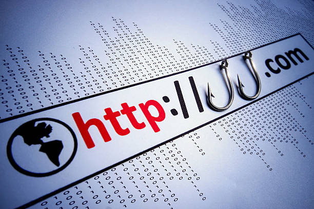

O que é Phishing?
Phishing é um tipo de ataque cibernético que usa e-mails, mensagens de texto, telefonemas ou sites fraudulentos para enganar as pessoas a compartilhar dados confidenciais, baixar malware ou se expor a crimes cibernéticos de outras formas.
Ataques de phishing são uma forma de engenharia social. Ao contrário de outros ciberataques, que têm como alvo direto redes e recursos, os ataques de engenharia social usam erros humanos, histórias falsas e táticas de pressão para manipular as vítimas e causar danos involuntários a si mesmas ou a suas organizações.
Estes ataques geralmente imitam fontes legítimas, como bancos ou sites populares, para parecerem confiáveis. Seu objetivo é explorar a confiança de uma pessoa nessas instituições, persuadindo-a a fornecer informações pessoais, clicar em links maliciosos ou fazer download de arquivos contendo malware.

Como identificar uma mensagem de Phishing?
As mensagens de phishing são projetadas para induzir os destinatários ao erro e obter dados confidenciais. Elas costumam apresentar certos padrões e características:
- Urgência e pressão: Costumam exigir ações imediatas com alegações alarmantes, como o encerramento iminente de uma conta, ameaças judiciais ou promoções com prazo limitado.
- Pedidos de dados confidenciais: Solicitam frequentemente o envio de informações pessoais e financeiras, como senhas, dados bancários, números de cartão de crédito ou registros de identificação.
- Links e anexos suspeitos: Incluem links redirecionáveis para páginas fraudulentas ou arquivos anexados, destinados a instalar malware em seu dispositivo.
- Falsificação de remetente: Simulam comunicações oficiais de instituições de confiança, como bancos, órgãos públicos ou marcas consolidadas.
- Inimidação e ameaças: Utilizam mensagens que criam medo ou ansiedade, como alegações de violação de segurança ou alegações de que a conta será bloqueada.
- Erros de ortografia e gramática: Embora nem sempre seja o caso, muitas mensagens de phishing contêm erros gramaticais e de ortografia incomuns que não seriam típicas da linguagem oficial da instituição.
- Promessas irrealistas: Oferecem vantagens exageradas ou prêmios improváveis, como contemplações em sorteios e recebimento de dinheiro em excesso.
- Comunicações não solicitadas: Chegam sem solicitação prévia e abordam contas, produtos ou serviços com os quais você não possui vínculo.
Como se proteger contra Phishing?
Para se proteger contra ataques de phishing, siga estas práticas recomendadas:
- Verifique a autenticidade: Confirme a origem da mensagem antes de clicar em links ou anexos. Procure por erros de ortografia, gramática ou endereços de e-mail suspeitos.
- Use autenticação multifator (MFA): Ative a MFA em todas as contas importantes para adicionar uma camada extra de segurança.
- Atualize regularmente: Mantenha seu sistema operacional, navegador e antivírus atualizados para proteger contra vulnerabilidades conhecidas.
- Saiba reconhecer alertas: Preste atenção a mensagens que criam urgência ou pressão, como ameaças de bloqueio de conta ou ofertas improváveis.
- Use ferramentas de segurança: Utilize filtros de spam, extensões de segurança e verificadores de links para detectar e bloquear conteúdo malicioso.
- Eduque-se e ensine outros: Esteja ciente das técnicas de phishing e compartilhe conhecimento com familiares e colegas para fortalecer a segurança coletiva.
Clicou em um link de phishing? Veja o que fazer
Mantenha a calma, mas tome medidas imediatas.
- Desconectar: Se você clicou em um link e foi redirecionado para um site suspeito, desconecte-se da internet imediatamente para evitar mais danos e roubo de dados.
- Verifique se há virus e malware: Execute uma varredura completa do seu sistema com um antivírus atualizado para garantir que não haja malware instalado.
- Altere senhas: Se você já forneceu credenciais em um site phishing, altere imediatamente as senhas das contas afetadas, especialmente para contas financeiras, bancárias e de email.
O que acontece se você abrir um site de phishing?
Abrir um site de phishing pode ter consequências graves, dependendo do que você faz no site. Aqui estão os principais riscos:
- Roubo de dados pessoais: Sites de phishing são projetados para coletar suas informações pessoais, como nome, endereço de e-mail, número de telefone e até mesmo dados financeiros.
- Phishing de e-mail: Sites de phishing podem ser usados para enviar e-mails maliciosos para outras pessoas, o que pode levar a ataques de phishing em massa.
- Malware: Sites de phishing podem conter malware, como vírus, spyware e outros tipos de software malicioso que podem danificar seu dispositivo ou roubar seus dados.
Agora que você já sabe o que é phishing e como se proteger, que tal aprender sobre os tipos de malware e como evitá-los?